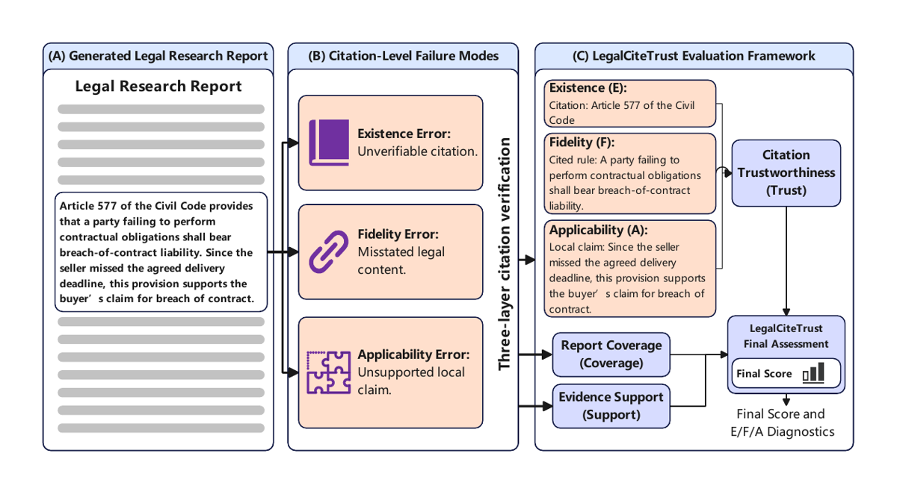
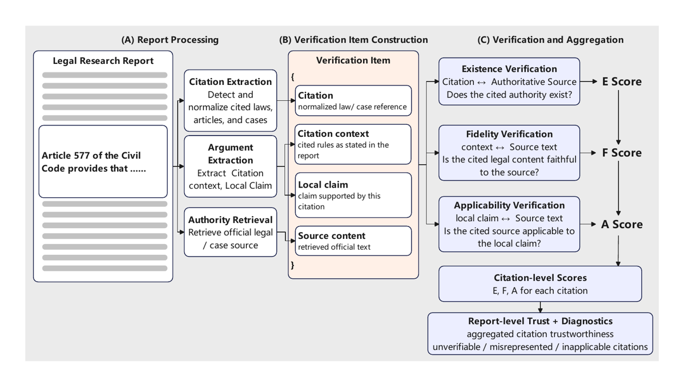
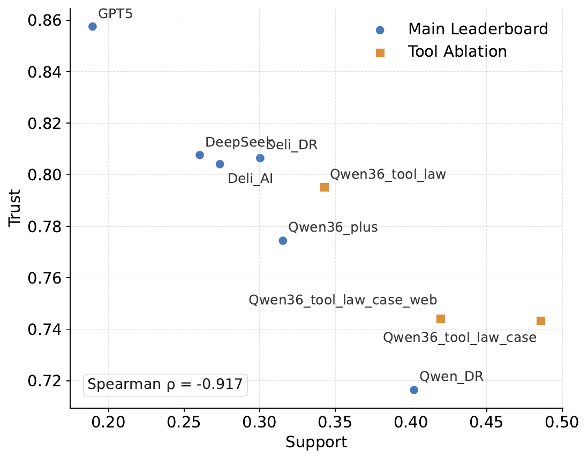

TL;DR. Benchmark de 72 tâches de rapport juridique long en chinois qui décompose la fiabilité d'une citation en Existence / Fidelity / Applicability (E/F/A) au niveau de chaque citation, agrège en un score Trust multiplicatif, et montre (a) que retrieval ↑ Support mais pas Trust, (b) que du feedback E/F/A complet améliore les rapports plus nettement qu'un filtre d'existence seul.
Claim principal, formulé. Sur 72 tâches identiques, en partant de Qwen36_tool_law_case (Base), une étape de révision LLM alimentée par le rapport de vérification E/F/A complet porte Trust de 0.7433 → 0.8883 et Final de 1.0329 → 1.1708, contre 0.8134 / 1.0970 pour un filtrage par Existence seule [Tab. 7]. Le gain marginal d'E/F/A sur E-seul est donc de +0.0749 Trust et +0.0738 Final. Corollaire annoncé : la fiabilité d'une citation n'est pas gouvernée par son existence mais par sa description et son usage argumentatif.
⚠️ Le résultat le plus utile pour nous n'est pas le claim principal mais son diagnostic item-level : optimiser E seul dégrade activement F et A sur les cases (case F 0.8116 → 0.7837, case A 0.8288 → 0.7644 de Base à E-Filter) [Tab. 26]. C'est une démonstration en miniature de reward hacking d'un vérifieur d'identifiant.
main query + subtopics + subtopic descriptions, qui constituent l'input de génération [§3.2].⚠️ Conséquence méthodologique non discutée : Coverage est calculé contre des rubrics extraites du document source, dont la structure (subtopics) est donnée au modèle en entrée. Les auteurs le reconnaissent : Coverage est une mesure d'« adherence under a given research plan, not open-ended legal issue spotting » [§3.1, App. A.2]. C'est un plan-following, pas de l'issue spotting. Explique les Coverage très hauts (0.84–0.95 sauf Farui) [Tab. 5].
| Statistique | Compte |
|---|---|
| Documents sources candidats | 13 622 |
| Documents / tâches finaux | 72 |
| Subtopics | 236 (≈ 3,3 / tâche) |
| Rubrics | 585 (≈ 8,1 / tâche, ≈ 2,5 / subtopic) |
| Evidence points | 1 459 (≈ 20,3 / tâche) |
Source : [Tab. 2].
Volume de citations produites (dénominateurs réels de Trust), sur les 72 tâches [Tab. 24] :
| Système | n_law | n_case | law/rapport |
|---|---|---|---|
| Qwen_DR | 1223 | 158 | ≈ 17,0 |
| Qwen36_plus | 837 | 4 | ≈ 11,6 |
| Deli_DR | 797 | 22 | ≈ 11,1 |
| DeepSeek | 603 | 6 | ≈ 8,4 |
| Deli_LegalAI | 564 | 8 | ≈ 7,8 |
| Farui | 360 | 0 | ≈ 5,0 |
| GPT5 | 175 | 1 | ≈ 2,4 |
⚠️ Déséquilibre law/case massif (de 5:1 à 209:1). Les auteurs le signalent et demandent de lire les scores case avec n_case [§5.1, App. E]. Concrètement : les colonnes case F / case A de GPT5, Qwen36_tool_law, DeepSeek, Deli_LegalAI reposent sur 1 à 8 items et ne sont pas interprétables.
Non précisé. Aucune stratification par difficulté, domaine du droit, longueur, ni par nombre de rubrics. ⚠️ Absence notable pour un benchmark de 72 items : on ne peut pas savoir si l'écart entre systèmes vient d'une poignée de tâches.
Non applicable / non fait. Aucun filtrage par capacité du modèle ; le filtre est purement structurel (densité d'autorité).
Non applicable — pas d'entraînement.
Qwen36_tool_law_case_web, Qwen_DR, Deli_DR) peut le retrouver et récupérer directement les rubrics. Le fait que les auteurs ne publient pas les textes sources protège les futurs entraînements mais ne protège pas l'évaluation faite dans le papier.Aucune — pas d'entraînement.
Détaillé, et c'est un point fort du papier [App. C] : - Experts : « legal research professionals from a collaborating organization's legal research unit », formation juridique niveau master ou équivalent, > 3 ans d'expérience en industrie juridique. - Un expert primaire mène le raffinement du protocole et produit les labels d'audit finaux de C.1. - Un second expert, moins impliqué, audite indépendamment un sous-ensemble (C.2.2). - D'autres membres contribuent « par discussion et consultation ». - Processus : démo initiale → instructions d'annotation rédigées par l'équipe → révisées par les experts → pilote sur un set séparé pour itérer sur workflow / prompts / model settings / decision rules → protocole gelé → évaluation finale. - Volume audité : 837 items au total (598 law, 239 case) [Tab. 16]. - Rémunération : pas de paiement par item ni crowdwork ; collaboration interne. Pas d'approbation IRB, traité comme consultation d'experts internes [App. C]. - Heures : non précisé.
⚠️ Un seul annotateur primaire produit la vérité terrain. L'accord inter-expert n'est mesuré que comme stability check sur un sous-ensemble law uniquement — aucun second expert sur les items case.
Il n'y a pas d'environnement RL. Deux « harness » distincts coexistent : (A) le harness de génération de rapport, laissé au système évalué ; (B) le pipeline de vérification de citations, qui est le vrai artefact réutilisable. C'est (B) qui nous intéresse.
main query + subtopics + subtopic descriptions [§4]. Le prompt exact n'est pas dans le papier (il est dans benchmark/data/query_prompts/ du dépôt).Ablation partant de Qwen36_plus, task input et base prompt fixes [§5.2], ajout incrémental de :
1. law search
2. law + case search
3. law + case + web search
Signatures des outils : non fournies dans le papier. Le dépôt indique les providers : law_online: "platform", case_online: "platform" (plateforme Deli) et des credentials Deli_search_api, Deli_api_platform, Tavily (web) [config/credentials.example.json, vérifié HTTP].
Statistiques d'appels d'outils [§5.2, texte seul, aucune table] :
| Réglage | Appels/rapport | dont |
|---|---|---|
| law only | ≈ 1,97 | — |
| law + case | ≈ 4,15 | ≈ 2,24 case-search |
| law + case + web | ≈ 6,10 | ≈ 1,94 web-search |
⚠️ Horizon très court (2 à 6 appels par rapport de plusieurs milliers de tokens). Ce n'est pas un agent de recherche profonde ; c'est un LLM avec quelques lookups.
Trois étages [Fig. 4, App. A.4.1] :
(A) Report Processing
- Citation Extraction : détecte et normalise lois, articles, cases cités.
- Argument Extraction : extrait, pour chaque citation, le citation context (la règle telle qu'énoncée dans le rapport) et le local claim (l'affirmation que la citation est censée soutenir).
- Authority Retrieval : récupère le texte officiel de la source.
(B) Verification Item Construction — chaque citation devient un item à 4 champs [Fig. 4, App. A.4.2] :
{
Citation : référence loi/case normalisée
Citation context: la règle citée telle qu'énoncée dans le rapport
Local claim : l'affirmation soutenue par cette citation
Source content : le texte officiel récupéré
}
(C) Verification and Aggregation — trois jugements séquentiels [App. A.4.1] :
- Existence : Citation ↔ Authoritative Source. « Does the cited authority exist? »
- Fidelity : Citation context ↔ Source text. « Is the cited legal content faithful to the source? »
- Applicability : Local claim ↔ Source text. « Is the cited source applicable to the local claim? »
⚠️ C'est cette structure à 4 champs qui est la vraie contribution réutilisable. Elle sépare deux comparaisons que tout le monde confond : rapport↔source (F) et claim↔source (A). Un vérifieur naïf ne fait que la première.
law_article_store.json (base articles), law_article_overlay_store.json, case_store.json, law_title_alias_mapping.json (alias de titres de lois).citation-verification/data/README.md].refresh_when_status: ["pending"], refresh_after_days: 90 [config.json].stage2_3_llm_judgment_cache.json.Traitée explicitement, et c'est là que se logent les failles [App. A.4.6] : - NA / skipped sur F ou A (par ex. « insufficient input », skip explicite) → cette couche vaut 1.0 dans le produit multiplicatif. Justification des auteurs : « an unavailable F/A judgment does not add an extra penalty ». - Excluded : lois non ciblées, lois étrangères, projets/documents de consultation, cases exclus à la résolution → sortis du dénominateur de Trust et des moyennes E/F/A. - Unknown label (label non couvert par le mapping) → 0.0, « to avoid inflating scores ». - E doit toujours être scoré — pas de NA sur E.
Le papier ne donne pas de trajectoire complète, mais trois items de vérification qualitatifs [App. E, Tab. 21, 22, 23]. Le plus instructif, l'erreur de Fidelity (rapport Qwen_DR) :
Model statement : "The court treated the land-use-right arrangement as a gift
contract rather than an internal marital property agreement."
Source finding : "Zhu Jinhui claims that Clause 3 of the agreement is a gift
contract ... because Clause 3 is one term of the agreement,
it CANNOT be separately understood as a gift contract;
therefore, the claim to revoke the gift lacks foundation
and is REJECTED."
E/F/A outcome : Fidelity failure: the report turns a rejected litigant
argument into the court's conclusion.
Case n° (2021) Yue 06 Min Zhong 16937 [App. E.2].
⚠️ C'est exactement le failure mode qui tue un agent juridique : le modèle a pris la thèse d'une partie, rejetée par la cour, et l'a réécrite en règle de droit. L'identifiant du case est parfaitement valide — un vérifieur d'existence donne 1.0.
Hybride à trois couches, avec crédit partiel discret, structuré comme une hiérarchie de scores [Tab. 3] :
Final = (Coverage + Support) × Trust ∈ [0, 2]
Coverage = Σ coverage_i / (3 · N_rubric) ∈ [0, 1] juge LLM, 0/1/2/3
Support = 0.5 · RES + 0.5 · SES ∈ [0, 1]
RES = Σ max(l_i, c_i) / (3 · N_rubric) juge LLM, 0/1/2/3
SES = Σ (a_j / 3) / N_subtopic comptage post-hoc, règles code
Trust = mean_i ( E_i · F_i · A_i ) ∈ [0, 1]
E : law = lookup DB déterministe ; case = lookup binaire
F, A : juge LLM (qwen3.7-plus selon le dépôt)
countable si elle a « extractable factual/citation context or claim-support content » [App. A.3.2]. Définition opérationnelle floue. ⚠️Coverage (rubric-level) [Tab. 8] | Score | Définition | |---|---| | 0 | Ne couvre pas le contenu central de la rubric | | 1 | Mentionne seulement mots-clés, concepts ou conclusions | | 2 | Explique clairement sens, cause, manifestation ou scénario d'application | | 3 | Analyse au niveau paragraphe avec ≥ 2 types d'élaboration (causes, conséquences, application judiciaire, critères typologiques) |
Rubric Evidence Support [Tab. 9] — r_i = max(l_i, c_i)
| Score | Law support |
|---|---|
| 0 | Aucune loi / interprétation judiciaire / document normatif ne soutient la rubric |
| 1 | Nom de loi ou n° d'article présent, mais en arrière-plan ou lien faible |
| 2 | Nom de loi/document et n° d'article clairement utilisés pour le jugement central de la rubric |
| 3 | En plus de 2 : le rapport paraphrase la règle ou explique validité, voie d'application, ou effet adjudicatif |
| Score | Case support |
|---|---|
| 0 | Aucune autorité jurisprudentielle |
| 2 | Case identifiable clairement utilisé pour le jugement central |
| 3 | En plus : faits, raisonnement judiciaire, conclusion ou règle énoncés |
⚠️ Le score 1 n'existe pas pour case support — asymétrie non expliquée. Un case cité en arrière-plan vaut 0, une loi citée en arrière-plan vaut 1.
Subtopic Evidence Support [Tab. 10] — calculé par code, pas par juge | Raw | Définition | |---|---| | 0 | Aucune autorité countable | | 1 | Une autorité countable | | 2 | ≥ 2 autorités countable | | 3 | ≥ 3 autorités countable, incluant à la fois law et case |
Law Existence [Tab. 11] — déterministe | Condition | Score | |---|---| | Loi résolue, article résolu, statut effective | 1.0 | | Loi résolue, article résolu, statut expired / pending / no timeliness | 0.5 | | Loi suspectée hallucinée, ou conclusion de loi indéterminée | 0.0 | | Conclusion article = article inexistant | 0.0 | | Loi ou article non résolu | 0.0 |
Map de statut (dépôt, config.json) : 1 无时效性 (sans timeliness), 2 失效 (caduque), 3 部分失效 (partiellement caduque), 4 已被修改 (modifiée), 5 有效 (en vigueur), 6 未生效 (pas encore entrée en vigueur).
Case Existence [Tab. 13] — binaire | Statut | Score | |---|---| | matched | 1.0 | | excluded | hors du dénominateur Trust | | unresolved, unmatched, empty, other | 0.0 |
Law Fidelity / Applicability [Tab. 12] | Label | Score | | Label | Score | |---|---|---|---|---| | Fidelity | | | Applicability | | | Consistent | 1.0 | | Supports | 1.0 | | Minor omission | 1.0 | | Partially supports | 0.5 | | Key omission | 0.5 | | Overextended inference | 0.5 | | Paraphrase deviation | 0.5 | | Contradicts | 0.0 | | Clear conflict | 0.0 | | Irrelevant | 0.0 | | Irrelevant | 0.0 | | Insufficient input | NA → 1.0 | | Insufficient input | NA → 1.0 | | Other unknown | 0.0 | | Other unknown | 0.0 | | | |
Case Fidelity / Applicability [Tab. 14] — mêmes valeurs, labels légèrement différents : F a Key missing content (0.5) et Contradicts (0.0), pas de paraphrase deviation ; Skipped → NA → 1.0.
item_trust = E × F_{NA=1} × A_{NA=1} [App. A.4.3]. Multiplicatif : un échec sur n'importe quelle couche annule l'item.Trust_report = mean(included item_trust) — pooling law et case ensemble, pondéré naturellement par leurs comptes [App. A.4.7].Trust_report = 1.0 si le rapport n'a aucun item de citation inclus [§3.3, App. A.4.7]. Justification : Trust est conditionnel aux citations incluses ; la rareté est censée être captée par Support et le Final.⚠️⚠️ Piège majeur : les colonnes E/F/A du leaderboard et celles du diagnostic item-level ne sont pas la même quantité et divergent violemment.
| Système | E report-level [Tab. 5] | law E item-level [Tab. 24] | Écart |
|---|---|---|---|
| Farui | 0.9383 (le plus haut) | 0.6569 (le plus bas) | +0.281 |
| GPT5 | 0.8600 | 0.9400 (n_case=1, case E = 0.0) | −0.080 |
| Qwen_DR | 0.8630 | 0.9191 | −0.056 |
Farui a le meilleur score d'existence du leaderboard alors qu'un tiers de ses citations de loi ne se résolvent pas. Le papier explique la distinction macro/micro [§3.3, App. A.5, App. E] — ce n'est donc pas une erreur — mais le tableau principal du papier est trompeur si on le lit seul.
Final = (Cov + Sup) × Trust est le seul mécanisme anti-abstention : les auteurs le disent explicitement — « Coverage and Support prevent a system from obtaining a superficially high Trust score by producing very short or citation-sparse reports » [App. A.5].Audit humain, juge vs expert primaire [Tab. 16, App. C.1] :
| Couche | n | Label κ | Score κ | Label match | Score match |
|---|---|---|---|---|---|
| law E | 257 | 0.8384 | 0.7306 | 0.9883 | 0.9883 |
| law F | 137 | 0.8352 | 0.9182 | 0.8759 | 0.9124 |
| law A | 204 | 0.7970 | 0.9510 | 0.8627 | 0.9455 |
| case E | 107 | 0.7296 | 0.6993 | 0.8692 | 0.8692 |
| case F | 65 | 0.7988 | 0.9555 | 0.8769 | 0.9692 |
| case A | 67 | 0.9206 | 0.9728 | 0.9552 | 0.9552 |
| law macro | 598 | 0.8235 | 0.8666 | 0.9090 | 0.9487 |
| case macro | 239 | 0.8163 | 0.8759 | 0.9004 | 0.9312 |
| overall macro | 837 | 0.8199 | 0.8712 | 0.9047 | 0.9400 |
Les auteurs notent que l'accord au niveau score est souvent supérieur à l'accord au niveau label, parce que des labels distincts partagent un score (ex. minor omission et consistent valent tous deux 1.0) : les désaccords de frontière ont donc un effet limité sur le score final [App. C.1].
Stabilité juge et experts [Tab. 17, App. C.2] :
| Check | Couche | n | Label κ | Score κ | Label match | Score match |
|---|---|---|---|---|---|---|
| Juge R1 vs R2 | law F | 137 | 0.8648 | 0.9581 | 0.8978 | 0.9562 |
| Juge R1 vs R2 | law A | 204 | 0.8460 | 0.9466 | 0.8971 | 0.9412 |
| Juge R1 vs R2 | law macro | 341 | 0.8554 | 0.9524 | 0.8975 | 0.9487 |
| Expert 1 vs 2 | law E | 257 | 1.0000 | 1.0000 | 1.0000 | 1.0000 |
| Expert 1 vs 2 | law F | 137 | 0.7315 | 0.8391 | 0.7956 | 0.8248 |
| Expert 1 vs 2 | law A | 204 | 0.8292 | 0.9578 | 0.8824 | 0.9554 |
| Expert 1 vs 2 | law macro | 598 | 0.8536 | 0.9323 | 0.8927 | 0.9267 |
Lecture pour nous. C'est la mesure qui décide de l'usage en reward : - Plancher humain identifié : l'accord expert↔expert sur law F (label κ=0.7315) est inférieur à l'accord juge↔expert sur law F (κ=0.8352). Le juge LLM est donc déjà au niveau de bruit inter-humain sur la Fidelity. Fait rare et précieux. - Sur law A, score κ inter-expert = 0.9578 vs juge↔expert 0.9510 : quasi-égalité. - Le juge est plus stable avec lui-même (score κ=0.9524 entre deux runs) qu'un expert avec un autre expert (0.9323).
⚠️ Faux positifs / faux négatifs : NON séparés. Le papier ne donne que κ et match rate agrégés. Impossible de savoir si le juge sur-pénalise (FP : marque « key omission » sur une citation correcte → bruit dans le reward) ou sous-pénalise (FN : laisse passer une Applicability failure → reward hacking ouvert). C'est la donnée qui manque le plus pour décider d'un usage en RL. Elle serait reconstructible depuis paper-artifacts/validation/human_labels/ du dépôt.
⚠️ Le κ=1.0000 expert1↔expert2 sur law E ne mesure rien. Les auteurs eux-mêmes disent que law E est produit par « human database-based existence verification » et que « its expert-to-expert agreement is therefore 1.0 » [App. C.2.2]. Deux experts qui lisent la même sortie de base de données s'accordent par construction. Ce chiffre ne doit pas être cité comme preuve de fiabilité.
⚠️ Incohérence de terminologie sur law E. App. C.1 dit « We then compare the LLM judge labels with the primary expert labels » et la table inclut une ligne law E (n=257). App. C.2.1 dit « Law E is not included [...] because law Existence is produced by deterministic parsing and database verification rather than by the LLM judge ». Les deux ne peuvent pas être vrais simultanément. La ligne law E de [Tab. 16] compare donc la sortie déterministe du pipeline à l'expert, pas un juge. Ça n'invalide pas le chiffre mais ça rend la table mal étiquetée.
citation-verification/config.json) :"models": {
"stage2_3_law_title_rewrite": "qwen3.6-flash",
"stage3_1_law_argument_extract": "qwen3.6-flash",
"stage3_3_law_judge": "qwen3.7-plus",
"stage4_2_case_argument_extract": "qwen3.7-max",
"stage4_3_case_same_case": "qwen3.7-plus",
"stage4_3_case_judge": "qwen3.7-plus"
}
DATA_AVAILABILITY.md (vérifié HTTP) : « The public package intentionally excludes raw law/case audit-stage JSON, raw judge prompts and responses, online retrieval payloads, per-call tool traces, logs, caches... ». Il n'y a donc rien à recopier — les prompts de jugement n'existent nulle part publiquement.⚠️ Asymétrie décisive : le mapping label→score est reproductible, la production du label ne l'est pas. Réimplémenter E/F/A demande de réécrire les prompts de zéro, donc de refaire la validation humaine.
⚠️ Circularité vérifieur/concurrent, non divulguée. La résolution d'Existence passe par la plateforme Deli (law_online: "platform", case_online: "platform", credentials Deli_search_api / Deli_api_platform), or Deli_DR et Deli_LegalAI sont deux des sept systèmes du leaderboard — et Deli_DR obtient le meilleur Final (0.9818) et le meilleur case E item-level (0.9091) [Tab. 5, Tab. 24]. Le papier ne mentionne pas ce chevauchement. Les auteurs reconnaissent seulement, en termes généraux, que « verification is bounded by [...] the coverage of reference stores and commercial retrieval APIs » et qu'« a valid citation missing from these sources may be treated as unverifiable, which can disadvantage closed systems » [Limitations]. ⚠️ Le symétrique — qu'un système avantagé par la même source ne soit pas signalé — n'est pas traité. Les claims ablation (tool, verification) ne dépendent pas de ce biais (tout est dans la famille Qwen), le classement du leaderboard oui.
Non testé. Aucune tentative d'attaque du vérifieur, aucun red-teaming. Cohérent avec un papier sans entraînement, mais ⚠️ le design expose au moins quatre surfaces (§5).
Aucun entraînement : ni RL, ni SFT, ni DPO. Le papier est un benchmark plus un protocole de vérification. La seule boucle d'amélioration est l'ablation de vérification §5.3 : un étage de révision LLM en inference-time, non entraîné, alimenté par le rapport de vérification (E seul, ou E/F/A complet), appliqué une fois sur les sorties de Qwen36_tool_law_case [§5.3]. Nombre d'itérations de révision, prompt de révision, modèle réviseur : non précisé (le nom EFC-Revise apparaît dans le dépôt, EFA-Revise dans le papier — coquille sans conséquence).
(1) Existence failure — autorité fabriquée [App. E.1, Tab. 21] - Comportement : un rapport Deli_DR cite la « Public Data Management Regulation ». Le titre a la forme de surface d'un règlement officiel mais ne se résout à aucune loi, interprétation judiciaire, règlement ou document normatif valide. - Détecté par : résolution de titre en base (couche E déterministe). - Correction : E-Filter retire l'item (law E 0.9446 → 0.9987) [Tab. 26]. - Les auteurs : « such a citation can create a false sense of normative support ».
(2) Fidelity failure — thèse rejetée promue en règle [App. E.2, Tab. 22] — recopiée en §2. - Comportement : le rapport transforme la position d'une partie, rejetée par la cour, en holding de la cour. Le case existe, les faits correspondent. - Détecté par : comparaison citation-context ↔ texte officiel du jugement (couche F, juge LLM). - Correction : seule EFA-Revise la corrige (case F 0.8116 → 0.9257) ; E-Filter la dégrade (→ 0.7837) [Tab. 26]. - Les auteurs : « A real case has thereby been converted into authority for the opposite legal proposition. »
(3) Applicability failure — règle réelle, fonction argumentative fausse [App. E.3, Tab. 23] - Comportement : pour soutenir « une clause de donation immobilière dans une convention de divorce a un caractère statutaire et échappe donc au droit général de révocation », le rapport cite l'art. 186 de la Loi sur les contrats — qui énonce précisément la règle générale de révocabilité avant transfert, avec des exceptions limitées (intérêt public, obligation morale, donation notariée). - Les auteurs : « If read in isolation, the cited rule more directly supports the opposite proposition. » - Détecté par : comparaison local-claim ↔ texte source (couche A, juge LLM). - Correction : EFA-Revise (law A 0.8810 → 0.9265) [Tab. 26].
⚠️ Mon observation sur cet exemple : la « Contract Law of the PRC » a été remplacée par le Code civil de 2021 ; l'art. 186 cité relève donc en principe du statut 失效 (caduque), qui vaut 0.5 sur law E [Tab. 11]. Le papier classe l'exemple en pure Applicability failure sans commenter le statut. Les trois couches ne sont donc pas aussi disjointes que présenté — un même défaut peut relever de E (statut) et de A (fonction). À vérifier dans les données brutes avant de reprendre la taxonomie telle quelle.
(4) Reward hacking d'un vérifieur d'existence — démontré [Tab. 26, §5.3] C'est le résultat le plus important du papier pour nous, et il est présenté comme une ablation, pas comme un failure mode. - Comportement : optimiser E seul (E-Filter supprime les citations non résolues) améliore E au plafond mais dégrade les couches sémantiques sur les cases : case F 0.8116 → 0.7837, case A 0.8288 → 0.7644. - Mécanisme : le filtre retire 42 cases (146 → 104) et 98 lois (849 → 751). Les cases retirés étaient disproportionnément des cases dont la description était par ailleurs correcte ; ceux qui restent sont plus souvent mal décrits. - Les auteurs : « removing unresolved citations does not make the remaining case uses faithful or locally supportive ». - Correction : feedback E/F/A complet. EFA-Revise retire encore plus de cases (104 → 74) mais améliore les quatre couches sémantiques simultanément [Tab. 26].
(5) Haut Trust par abstention — observé empiriquement [§5.1]
- Comportement : Farui obtient le meilleur Trust du leaderboard (0.9133) avec Coverage 0.3963, Support 0.0300, n_case = 0 et seulement 360 citations de loi [Tab. 5, Tab. 24].
- Détecté par : les auteurs le signalent explicitement — « Farui illustrates why Trust alone is insufficient » [§5.1].
- Correction : le couplage Final = (Cov + Sup) × Trust, qui ramène Farui à 0.3835, dernier du classement.
(6) Tension densité ↔ fiabilité — mesurée [§6.1, §6.2, Fig. 2, Fig. 3] - Spearman Support–Trust = −0.9167 (n=9 systèmes) ; reference count–Trust = −0.9167 ; Rubric Support–Trust = −0.7667 ; Subtopic Support–Trust = −0.9167 [Tab. 15]. - Les auteurs : « every added statute, regulation, or case must satisfy Existence, Fidelity, and Applicability » ; ce n'est pas « fewer citations are better ».
⚠️ (a) NA → 1.0 sur F et A. « Insufficient input » et « skipped » valent 1.0, pas 0 ni exclusion [App. A.4.3, A.4.6]. Un générateur qui écrit des contextes de citation suffisamment vagues pour que le juge ne puisse pas décider obtient F=A=1.0 et donc item_trust = E. Sous reward E/F/A, la politique optimale locale est de citer précisément l'identifiant et de ne rien affirmer de vérifiable sur le contenu. Non discuté, non mesuré (le taux de NA n'est reporté nulle part). À mesurer en priorité si on reprend ce design.
⚠️ (b) Trust = 1.0 si zéro citation. [§3.3, App. A.4.7] Deuxième maximum dégénéré. Contré par Final, mais uniquement parce que Final est multiplicatif. Utiliser Trust seul comme reward donnerait immédiatement un modèle qui ne cite rien.
⚠️ (c) La catégorie excluded. Lois non ciblées, lois étrangères, drafts, documents de consultation, cases exclus → sortis du dénominateur, donc coût zéro [App. A.4.2, A.4.4]. Citer un projet de loi ou une loi étrangère est gratuit : ça n'augmente pas Trust mais ça ne le baisse pas non plus, et ça peut alimenter Support si l'autorité est « countable ». Interaction Support/Trust non examinée.
⚠️ (d) Découplage Support/Trust assumé. SES compte les autorités « countable » indépendamment de leur F/A [App. A.3.2] : « an authority can contribute to Subtopic Evidence Support even if a later E/F/A judge assigns a partial or failing F/A score ». Sur Final = (Cov+Sup)×Trust, ajouter une citation fausse rapporte en Support et coûte en Trust. Le point d'équilibre dépend des magnitudes : Support ≈ 0.30 et Trust ≈ 0.78 chez Qwen36_plus, donc ∂Final est loin d'être trivialement négatif. Non analysé par les auteurs. ⚠️ Si on reprend cette formule comme reward, ce calcul est à faire explicitement.
Aucun (pas d'entraînement). Le seul effet non anticipé rapporté : ajouter le web search dégrade tout — Support 0.4857 → 0.4197, Final 1.0329 → 0.9903, cases 146 → 73 [Tab. 6, Tab. 25]. Les auteurs : « broader web access changes evidence selection rather than reliably making legal citations more trustworthy » [App. E]. ⚠️ Signal net pour un agent juridique : le web généraliste déplace la sélection de preuve vers des sources non autoritaires, au détriment de la jurisprudence.
stage2_3_llm_judgment_cache.json) existe dans le dépôt, ce qui suggère un pipeline séquentiel avec mémoïsation.qwen3.7-plus par item. La couche E, elle, est un lookup local déterministe — parallélisable et quasi gratuite.| Chiffre annoncé | Où il est annoncé | Source dans le papier | Verdict |
|---|---|---|---|
| « 72 densely annotated report-level tasks » | Abstract | [Tab. 2] : 72 « Final source documents / tasks » | confirmé |
| « 13,622 legal research documents » (pool candidat) | §3.2 | [Tab. 2] : 13 622 | confirmé |
| 236 subtopics / 585 rubrics / 1 459 evidence points | §3.2 | [Tab. 2] : identiques | confirmé |
| « three dimensions: Coverage, Support, and Citation Trustworthiness » | Abstract | [§3.1], [Tab. 3] | confirmé |
| « Citation Trustworthiness [...] operationalized through [...] Existence, Fidelity, and Applicability » | Abstract | [§3.3], [App. A.4] | confirmé |
| « Retrieval tools can improve evidence support without reliably improving the Trust score » | Abstract, §1, §6.2 | [Tab. 6] : Support 0.3153→0.3427→0.4857→0.4197 ; Trust 0.7744→0.7951→0.7433→0.7441 | confirmé — la non-monotonie est réelle. ⚠️ Nuance jamais explicitée : le law search seul améliore Trust (+0.0207). C'est l'ajout du case search qui le dégrade (−0.0518). Formuler « retrieval n'améliore pas Trust » serait faux ; « le retrieval jurisprudentiel dégrade Trust » est ce que montrent les données |
| « E/F/A-based revision improves Trust and Final score more clearly than existence-only filtering » | Abstract, §1, §7 | [Tab. 7] : Trust 0.7433 / 0.8134 / 0.8883 ; Final 1.0329 / 1.0970 / 1.1708 | confirmé |
| Trust 0.7433 → 0.8134 → 0.8883 | §5.3, §6.2 | [Tab. 7] | confirmé |
| Final 1.0329 → 1.0970 → 1.1708 | §5.3, §6.2 | [Tab. 7] | confirmé |
| « law E rises from 0.9446 to 0.9987 and case E rises from 0.8014 to 0.9808 » | §5.3 | [Tab. 26] | confirmé |
| « case citations increase from 4 [...] to 146 [...] then fall to 73 » | §5.2 | [Tab. 25] : n_case 4 / 146 / 73 | confirmé |
| « about 1.97 tool calls per report [...] about 4.15 [...] about 2.24 case-search [...] about 6.10 [...] about 1.94 web-search » | §5.2 | aucune table | introuvable — chiffres présents uniquement dans le corps du texte, non traçables, non reproductibles depuis les artefacts publiés (les per-call tool traces sont explicitement exclus du dépôt) |
| Coverage–Trust ρ = 0.6833 ; hors GPT5 ρ = 0.5476 | §6.1 | [Tab. 15] : identiques (colonne « Main ρ », n=9 et n=8) | sur-généralisé — vrai uniquement Farui exclu. Avec Farui : ρ = 0.2242 (n=10), et hors GPT5 0.0833 (n=9) [Tab. 15]. Le texte de §6.1 dit « Coverage and Trust are only moderately associated » sans rappeler cette condition. Les auteurs divulguent honnêtement en [App. B] et justifient l'exclusion, mais la conclusion « coverage-like evaluation is necessary but not sufficient » est plus forte que le ρ=0.6833 — et renforcée, pas affaiblie, par ρ=0.2242. Sur-généralisation de forme, pas de fond |
| Support–Trust ρ = −0.9167 | §6.1, §6.2 | [Tab. 15] : −0.9167 (n=9), −0.9394 avec Farui (n=10) | confirmé — robuste à l'inclusion de Farui. ⚠️ Mais n = 9 points système, non homogènes (modèles, stacks et workflows différents). Un ρ de Spearman sur 9 points hétérogènes n'établit pas une loi ; les auteurs le disent (« descriptive system-level summaries rather than formal significance tests » [§6]) |
| reference count–Trust ρ = −0.9167 | §6.2 | [Tab. 15] : −0.9167 (n=9), −0.9273 (n=10) | confirmé, même réserve n=9 |
| « overall macro label κ = 0.8199 and score κ = 0.8712 » | §C.1 | [Tab. 16] | confirmé |
| « law macro score κ = 0.9524 » (juge R1 vs R2) | §C.2.1 | [Tab. 17] | confirmé |
| « law macro score κ = 0.9323 » (expert 1 vs 2) | §C.2.2 | [Tab. 17] | confirmé |
| « expert-to-expert agreement [on law E] is therefore 1.0 » | §C.2.2 | [Tab. 17] : 1.0000 | confirmé mais vide de sens — les auteurs reconnaissent eux-mêmes que law E ne passe pas par un jugement, donc l'accord est vrai par construction |
| « a single 72-report benchmark run costs roughly 10 RMB and takes about 2 hours » | §F.1 | aucune table ; auto-rapporté | introuvable (pas de source vérifiable), mais plausible et déclaré comme approximatif par les auteurs |
| « We then compare the LLM judge labels with the primary expert labels » (incluant law E) | §C.1 | contredit par §C.2.1 : « law Existence is produced by deterministic parsing and database verification rather than by the LLM judge » | contredit (contradiction texte↔texte, pas chiffre↔chiffre) — la ligne law E de [Tab. 16] compare le pipeline déterministe à l'expert, pas un juge LLM. Le chiffre reste valide, l'étiquette est fausse |
| Modèle juge | nulle part | — | introuvable dans le papier ; récupéré hors papier dans le dépôt (qwen3.7-plus) |
Synthèse 7.0. Tous les chiffres numériques de l'abstract, de l'intro et des sections de résultats se retrouvent exactement dans les tables. Deux blocs de chiffres n'ont pas de table source (statistiques d'appels d'outils, coût). Une sur-généralisation de forme sur le ρ Coverage–Trust, honnêtement divulguée en annexe. Une contradiction de terminologie, pas de valeur, sur le statut de law E. Case coherence = vraie.
Leaderboard principal, 72 tâches [Tab. 5]
| Système | Final | Cov | Sup | Trust | Rubric | Subtopic | E | F | A |
|---|---|---|---|---|---|---|---|---|---|
| Deli_DR | 0.9818 | 0.9204 | 0.3003 | 0.8064 | 0.3390 | 0.2616 | 0.9270 | 0.9487 | 0.9086 |
| GPT5 | 0.9776 | 0.9525 | 0.1895 | 0.8575 | 0.3111 | 0.0679 | 0.8600 | 0.9451 | 0.9091 |
| Qwen36_plus | 0.9612 | 0.9248 | 0.3153 | 0.7744 | 0.3164 | 0.3142 | 0.9011 | 0.9489 | 0.9079 |
| DeepSeek | 0.9591 | 0.9367 | 0.2604 | 0.8077 | 0.2684 | 0.2524 | 0.9168 | 0.9452 | 0.9039 |
| Deli_LegalAI | 0.9221 | 0.8727 | 0.2736 | 0.8041 | 0.2944 | 0.2528 | 0.9343 | 0.9313 | 0.9182 |
| Qwen_DR | 0.8856 | 0.8424 | 0.4020 | 0.7164 | 0.3795 | 0.4245 | 0.8630 | 0.9212 | 0.8867 |
| Farui | 0.3835 | 0.3963 | 0.0300 | 0.9133 | 0.0215 | 0.0385 | 0.9383 | 0.9580 | 0.9084 |
Écart absolu Final entre le meilleur (Deli_DR 0.9818) et GPT5 (0.9776) : 0.0042, avec des CI bootstrap qui se recouvrent largement ([0.9237, 1.0398] vs [0.8975, 1.0512]) [Tab. 18]. ⚠️ Le top du leaderboard n'est pas départageable. Le papier ne le dit pas aussi crûment.
Ablation outils [Tab. 6] — Δ par rapport à Qwen36_plus
| Réglage | Final | ΔFinal | Sup | ΔSup | Trust | ΔTrust |
|---|---|---|---|---|---|---|
| Qwen36_plus | 0.9612 | — | 0.3153 | — | 0.7744 | — |
| + law | 0.9718 | +0.0106 | 0.3427 | +0.0274 | 0.7951 | +0.0207 |
| + law + case | 1.0329 | +0.0717 | 0.4857 | +0.1704 | 0.7433 | −0.0311 |
| + law + case + web | 0.9903 | +0.0291 | 0.4197 | +0.1044 | 0.7441 | −0.0303 |
Ablation vérification [Tab. 7] — base = Qwen36_tool_law_case
| Réglage | Final | Cov | Sup | Trust |
|---|---|---|---|---|
| Base | 1.0329 | 0.9065 | 0.4857 | 0.7433 |
| E-Filter | 1.0970 (+0.0641) | 0.9099 | 0.4487 (−0.0370) | 0.8134 (+0.0701) |
| EFA-Revise | 1.1708 (+0.1379) | 0.9011 | 0.4223 (−0.0634) | 0.8883 (+0.1450) |
Diagnostics item-level, vérification [Tab. 26] — le tableau le plus informatif du papier
| Réglage | n_law | n_case | law E | law F | law A | case E | case F | case A |
|---|---|---|---|---|---|---|---|---|
| Base | 849 | 146 | 0.9446 | 0.9441 | 0.8810 | 0.8014 | 0.8116 | 0.8288 |
| E-Filter | 751 | 104 | 0.9987 | 0.9434 ↓ | 0.8775 ↓ | 0.9808 | 0.7837 ↓ | 0.7644 ↓ |
| EFA-Revise | 748 | 74 | 0.9866 | 0.9739 ↑ | 0.9265 ↑ | 0.9595 | 0.9257 ↑ | 0.9527 ↑ |
⚠️ Lecture pour un designer de reward : E-Filter améliore la seule couche qu'il optimise et dégrade les trois autres sur les cases. C'est la signature canonique du reward hacking par proxy partiel. Le papier l'observe sans jamais employer le mot.
Où se situe le goulot. Mon calcul, pas celui du papier : en approximant item_trust ≈ E·F·A sur les moyennes item-level du réglage Base, law ≈ 0.9446 × 0.9441 × 0.8810 ≈ 0.786, case ≈ 0.8014 × 0.8116 × 0.8288 ≈ 0.539. (Approximation grossière : la vraie agrégation est une moyenne de produits, pas un produit de moyennes.) Deux conclusions : la couche contraignante sur les lois est A, pas E ; les cases sont ~25 points en dessous des lois sur toutes les couches.
Rien. Aucune évaluation hors-distribution, aucun autre jeu de tâches, aucun test de transfert d'un environnement à l'autre. Les auteurs reconnaissent que le transfert inter-juridictionnel est non trivial [Limitations]. Limite structurelle : 72 tâches, une juridiction, un registre documentaire.
Non étudié. Ni taille de modèle (systèmes hétérogènes et fermés), ni nombre de tâches (72 fixes), ni compute. ⚠️ 72 tâches est un plancher : les SD bootstrap sur Final vont de 0.0148 à 0.0388 [Tab. 18], soit environ 10× l'écart Deli_DR–GPT5.
query_prompts/, rapports générés par les 12 réglages, labels humains, notebooks, figures. Stores law/case sur ModelScope (HTTP 200). ⚠️ Deux trous : les prompts de jugement sont explicitement exclus du paquet public (DATA_AVAILABILITY.md), et la vérification nécessite des credentials commerciaux Deli. On peut rejouer le scoring, on ne peut pas réimplémenter le juge.evidence = 5/6 — baselines fausse.
Solide comme protocole d'évaluation, non concluant comme leaderboard.
- Ce qui tient : la décomposition E/F/A, le mapping label→score, la validation humaine (la plus sérieuse que j'aie vue sur un juge juridique, avec un plancher inter-humain mesuré), et l'ablation de vérification qui est propre et bien contrôlée.
- Ce qui ne tient pas : le classement des sept systèmes (non appariés, écarts sous le bruit bootstrap, circularité vendeur non divulguée), et les corrélations système-level sur n=9.
- ⚠️ À répliquer avant réutilisation en reward : le taux de NA sur F et A — jamais reporté — et la décomposition FP/FN du juge, jamais faite. Ce sont les deux chiffres qui décident si E/F/A est utilisable comme signal d'apprentissage ou seulement comme diagnostic. Les deux sont calculables depuis les artefacts publiés.

Ce qu'il faut voir : la taxonomie complète tient dans le panneau (B) — Existence Error (citation non vérifiable), Fidelity Error (contenu juridique mal énoncé), Applicability Error (claim local non soutenu). Le panneau (C) montre le point clé de design : E, F et A ne comparent pas les mêmes objets. E compare l'identifiant à une source ; F compare la règle telle qu'énoncée dans le rapport au texte source ; A compare le local claim au texte source. L'exemple filé (art. 577 du Code civil, retard de livraison, responsabilité contractuelle) rend concret le fait que la même citation peut passer E et F et échouer A. Noter aussi le chemin d'agrégation : Trust d'un côté, Coverage et Support de l'autre, réunis seulement au Final — c'est ce qui empêche le haut Trust par abstention.

Ce qu'il faut voir : l'artefact réellement transférable. Étage (A) : trois extractions distinctes depuis le rapport — Citation Extraction (normalisation), Argument Extraction (citation context et local claim), Authority Retrieval (texte officiel). Étage (B) : l'item de vérification à 4 champs — c'est la brique unitaire. Étage (C) : les trois questions posées séparément, chacune sur une paire d'objets différente, produisant E, F, A puis Trust + diagnostics (« unverifiable / misrepresented / inapplicable citations »). Ce qu'on retient : rien ici n'est spécifique au droit chinois sauf le contenu des stores d'autorité. La structure est réimplémentable telle quelle sur du droit français ou du common law.

Ce qu'il faut voir : la frontière de Pareto qui doit gouverner tout design de reward juridique. GPT5 en haut à gauche (Trust 0.858, Support 0.190) : peu de citations, fiables. Qwen_DR en bas à droite (Trust 0.717, Support 0.402) : beaucoup de citations, fragiles. Spearman ρ = −0.917 sur 9 points. Les carrés oranges (ablation outils) sont décisifs : ils montrent que ce n'est pas un effet de modèle mais un effet causal du retrieval — le même Qwen36_plus se déplace le long de la frontière quand on lui ajoute des outils. ⚠️ Deux réserves de lecture : 9 points hétérogènes, et Farui exclu du graphe (ce qui ne change pas ce ρ, mais effondre le ρ Coverage–Trust de 0.68 à 0.22 [Tab. 15]).
Le papier est juridique. La question n'est donc pas « est-ce transférable au droit » mais « qu'est-ce qui survit au passage du droit civil chinois au droit français / common law, et qu'est-ce qui survit au passage d'un benchmark à un reward ».
| Élément | Spécifique Chine | Général | Argument |
|---|---|---|---|
| Law E par résolution loi + article + statut d'effectivité | Fortement | — | Suppose un corpus codifié, articles numérotés, et un statut officiel interrogeable en base. Le dépôt révèle une map à 6 valeurs (无时效性 / 失效 / 部分失效 / 已被修改 / 有效 / 未生效). Transfert direct vers la France (Legifrance expose versions et abrogations). Transfert vers le common law : ne couvre que les statutes, c'est-à-dire la minorité de l'autorité |
| Crédit partiel 0.5 pour loi expirée / pending | Moyennement | — | La Chine a connu une refonte massive (Code civil 2021 remplaçant la Loi sur les contrats). L'analogue français existe (réforme 2016 des obligations). Le principe — « la citation existe mais n'est plus en vigueur mérite un crédit partiel, pas zéro » — est général et important |
| Case E binaire via numéro de dossier | — | Général | Format (2021) Yue 06 Min Zhong 16937 ↔ n° ECLI, n° de pourvoi Cass., citation Bluebook. Résolution d'identifiant : transfert direct |
| Case A = « la décision soutient-elle le claim local » | Fortement | — | Point dur. En droit chinois il n'y a pas de précédent contraignant : un case est persuasif/illustratif, donc A se réduit à une question de pertinence sémantique. En common law A doit en plus couvrir : force précédentielle, juridiction et niveau de cour, analogie factuelle, et treatment history (overruled / distinguished / criticized). Les auteurs le disent explicitement : « Common-law settings [...] may require different Applicability criteria for precedential force, factual analogy, and treatment history » [Limitations]. Le protocole A tel quel est sous-spécifié pour Harvey LAB / Vals. En droit français, position intermédiaire : la jurisprudence n'est pas formellement contraignante mais la hiérarchie des cours et les revirements comptent |
| Ratio law:case de 5:1 à 209:1 [Tab. 24] | Fortement | — | Reflète une pratique statute-first. En common law le ratio s'inverse ⚠️ — donc la moitié la mieux validée du protocole (law, n=598 items audités, κ=0.8666) est celle qui compte le moins là où nous serons évalués ; la moitié la plus faible (case, n=239, case E item-level à 0.80 chez le meilleur système) est celle qui compte le plus |
| Décomposition E/F/A elle-même | — | Général | Ne suppose aucune doctrine des sources. « Existe / est décrit fidèlement / soutient le claim » vaut dans toute juridiction |
item_trust = E × F × A multiplicatif |
— | Général | Choix de design, pas de droit |
Final = (Cov + Sup) × Trust |
— | Général | Couplage anti-abstention |
| Structure de l'item à 4 champs (citation, context, local claim, source) | — | Général | La brique la plus réutilisable du papier |
| Résultat « E seul dégrade F/A » | — | Général, et c'est le résultat le plus important | Mécanisme de proxy partiel, indépendant de la juridiction |
| Stores d'autorité + API Deli | Totalement | — | À remplacer intégralement (Legifrance/Judilibre côté FR ; Westlaw/Lexis/CourtListener côté US) |
| Rubrics dérivées du document source, subtopics donnés en entrée | — | Général mais c'est une faiblesse | Mesure l'adhérence à un plan, pas l'issue spotting. Harvey LAB attend l'inverse |
| Ingrédient | Choix du papier | Équivalent juridique (Gemini Law) | Transfert | Ce qui manque |
|---|---|---|---|---|
| Source des tâches | 13 622 documents de recherche juridique minés → filtre « ≥1 case ET ≥5 refs normatives » → 72 ; le document source fournit query, subtopics, rubrics, evidence points [§3.2] | Miner des mémos de recherche internes / notes de cabinet ; le même document sert de prompt (query + plan) et de vérité terrain (rubrics + evidence points) | Direct — le filtre par densité d'autorité est une recette à 2 lignes, applicable tel quel | Le papier ne dit pas ce que sont les 13 622 documents. Coût d'extraction des rubrics non chiffré. ⚠️ Donner les subtopics en entrée réduit la tâche à du plan-following : pour Harvey LAB il faut une variante sans subtopics et un Coverage d'issue spotting |
| Vérifieur — couche E | Lookup déterministe loi+article+statut ; case binaire par n° de dossier ; crédit partiel 0.5 pour loi caduque/pending [Tab. 11, 13] | Résolveur Legifrance (article + version + abrogation) ; Judilibre/ECLI pour l'arrêt. Côté US : résolveur de citation + KeyCite/Shepard's | Direct. Déterministe, local, quasi gratuit, parallélisable | Rien côté FR. Côté common law : le statut d'effectivité d'un statute ne suffit pas, il faut le treatment history de l'arrêt, que le papier n'a pas |
| Vérifieur — couche F | Juge LLM, 8 labels → {1.0, 0.5, 0.0, NA=1.0} ; compare citation context ↔ texte source. Validé : label κ=0.8352, score κ=0.9182, n=137. Plancher inter-expert : label κ=0.7315 [Tab. 16, 17] | Juge Gemini comparant la règle telle qu'énoncée dans la réponse au texte officiel de l'article / de l'arrêt | Direct — c'est la couche la plus sûre. Le juge est au-dessus du bruit inter-humain | Le prompt n'existe nulle part (exclu du dépôt). À réécrire et revalider. Taux de NA non reporté ⚠️ |
| Vérifieur — couche A | Juge LLM, 7 labels ; compare local claim ↔ texte source ; label Overextended inference = 0.5. Validé : score κ=0.9510, n=204 [Tab. 16] |
Juge Gemini : « cet article/arrêt soutient-il l'affirmation exacte pour laquelle il est invoqué ici ? » | Adaptable — l'idée est directe, les critères common-law manquent | Il faut étendre le label set : force précédentielle, juridiction, analogie factuelle, treatment. Le label Overextended inference est déjà le plus utile pour nous (ne pas fusionner avec Partially supports) |
| Fiabilité du vérifieur | 837 items audités par un expert (>3 ans), protocole gelé après pilote séparé, second expert en stability check, juge R1 vs R2 [App. C] | Même protocole avec des juristes FR/US | Direct — c'est la méthodologie la plus réutilisable du papier, plus que les chiffres | FP/FN jamais séparés ⚠️. Un seul annotateur primaire. Aucun second expert sur les items case |
| Harness / outils | law search, case search, web search ; 2 à 6 appels/rapport ; web search nuit [§5.2, Tab. 5] |
Legifrance + Judilibre + (pas de web généraliste) | Adaptable | Signatures d'outils absentes. ⚠️ Prendre au sérieux : le web généraliste dégrade Final de −0.0426 — ne pas l'ajouter par défaut dans un agent juridique |
| Algo | Aucun. Révision LLM en inference-time, non entraînée | GRPO / RLOO avec Final ou Trust comme reward |
Non (rien à transférer), mais l'ablation E-Filter vs EFA-Revise préfigure exactement ce que donnerait un RL sur reward partiel | Tout. Aucune indication de stabilité sous optimisation. ⚠️ Le comportement observé en révision one-shot (E-Filter dégrade F/A) serait amplifié sous des milliers de steps de RL |
| Curriculum | Aucun | — | Non | — |
| Anti-hacking | Couplage (Cov+Sup)×Trust ; unknown label → 0.0 ; Trust=1.0 si zéro citation (contré par Final) |
Même couplage multiplicatif | Adaptable, avec 3 corrections obligatoires | ⚠️ NA → 1.0 sur F et A est un trou béant : rendre le NA neutre (exclure l'item) ou pénalisant, jamais 1.0. ⚠️ La catégorie excluded est gratuite. ⚠️ SES compte les autorités indépendamment de F/A |
Un vérifieur d'identifiant (« la citation se résout-elle ? ») ne calcule que E. Le papier fournit trois éléments quantitatifs qu'aucun vérifieur d'existence ne peut produire :
Le cas de Fidelity d'App. E.2 est la démonstration qualitative : un arrêt réel, un n° de dossier valide, dont la thèse rejetée par la cour est réécrite en règle de droit. Score d'un vérifieur d'identifiant : 1.0. C'est précisément la faute qui ferait perdre un dossier.
L'item de vérification à 4 champs — {citation, citation_context, local_claim, source_content} — et la séparation F/A qu'il rend possible [Fig. 4, App. A.4.2].
Pourquoi celui-là et pas le score Trust : c'est la seule partie du papier qui soit (a) entièrement indépendante de la juridiction, (b) entièrement décrite dans le papier, (c) validée contre des humains avec un plancher inter-humain mesuré, et (d) ce qui produit un signal dense. L'extraction explicite du local_claim est le geste central : sans lui, on ne peut pas poser la question A, et sans la question A on n'a qu'un détecteur d'hallucination d'identifiant. Le reste — pondérations, 0.5, formule Final — est arbitraire et à recalibrer ; la structure de l'item ne l'est pas.
Corollaire de conception : le reward juridique doit être item-level puis agrégé, pas document-level. Un rapport de 5 000 tokens avec 20 citations donne 20 signaux à trois couches, soit ~60 jugements binaires/ternaires — pas un scalaire. Le papier montre aussi le piège de l'agrégation : macro-sur-rapports et micro-sur-citations donnent des verdicts opposés (Farui : E=0.9383 vs 0.6569) [Tab. 5 vs Tab. 24]. Pour un reward, prendre le micro.
Objectif : mesurer si la couche A apporte un signal que E+F ne donnent pas, sur du droit français ou anglo-américain, et caractériser le vérifieur en FP/FN — le chiffre qui manque au papier.
Protocole (~2 semaines, 1 juriste × ~3 jours) :
1. Prendre 150 réponses produites par Gemini sur des questions de type Vals Legal Research Bench, avec citations.
2. Construire l'item à 4 champs par citation (extraction par Gemini, contrainte au contexte du rapport et à la source récupérée), soit ~1 200 items attendus au ratio du papier.
3. Couche E : résolveur déterministe (Legifrance article+version+abrogation ; ou résolveur de citation US). Aucun LLM.
4. Couches F et A : juge Gemini, en réutilisant les label sets de [Tab. 12] et [Tab. 14] tels quels, avec deux modifications : NA → item exclu (pas 1.0), et ajout de labels A pour la force précédentielle et la juridiction.
5. Faire annoter par un juriste un échantillon stratifié par label prédit de ~250 items — la stratification est ce qui permet d'estimer FP et FN séparément, ce que le papier n'a pas fait.
6. Rapporter : précision et rappel par couche et par label, taux de NA, et κ juge↔juriste.
Résultat attendu, quantifié depuis le papier : - Couche F : score κ ≥ 0.90 et un juge au niveau du bruit inter-humain — reproduction directe de [Tab. 16] (law F score κ=0.9182) et [Tab. 17] (plancher expert κ=0.8391). Utilisable en reward sans réserve. - Couche A : score κ ≈ 0.90–0.95 sur les statutes [Tab. 16 : 0.9510], mais nettement plus bas sur la jurisprudence de common law que les 0.9728 du papier sur les cases chinois, parce que la force précédentielle ajoute une dimension absente du protocole chinois. C'est l'hypothèse à falsifier. - Couche E : quasi-parfaite et quasi-gratuite, mais non discriminante — c'est le point 1 de la section précédente, et ce sera l'argument pour ne pas s'en contenter. - FP/FN : c'est la sortie qui décide. Un taux de FP élevé sur A (le juge pénalise des citations correctes) injecte du bruit dans le reward et pousse vers l'abstention ; un taux de FN élevé (le juge laisse passer les Applicability failures) rend le reward hackable. Mon attente : FN >> FP sur A, parce que juger « ce texte ne soutient pas tout à fait ce claim » demande plus de compétence que juger « ce texte est hors sujet ».
Extension à faible coût, à faire dans la foulée : reproduire l'ablation E-Filter vs EFA-Revise en inference-time sur ces 150 réponses. C'est une révision one-shot, sans entraînement, et ça donne une borne inférieure du gain RL pour quelques centaines d'euros. Attendu par analogie avec [Tab. 7] : E-seul gagne, E/F/A gagne davantage, et E-seul dégrade les couches sémantiques sur la jurisprudence.
NA dans nos vérifieurs existants ? Le papier met NA → 1.0 sur F et A [App. A.4.3], ce qui crée un optimum dégénéré : citer un identifiant valide et ne rien affirmer de vérifiable. Sous RL, ce trou serait trouvé en quelques centaines de steps. Question générale : tout reward juridique doit expliciter le traitement de l'abstention du vérifieur, et le papier montre que même une équipe soigneuse peut le rater.